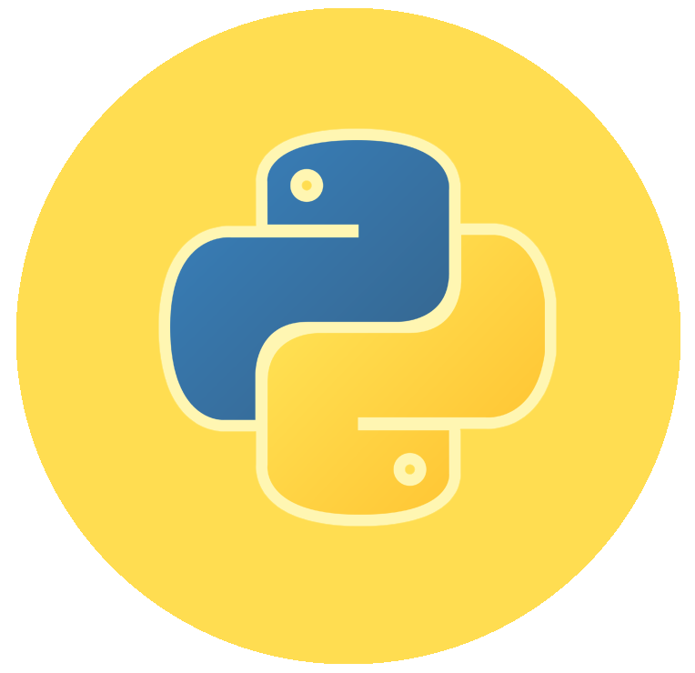

The Coding Dossier


Java
Is a set of several computer software and specifications developed by Sun Microsystems, later acquired by Oracle Corporation, that provides a system for developing application software and deploying it in a cross-platform computing environment.
HTML 5
Is a core technology markup language of the Internet used for structuring and presenting content for the World Wide Web. As of October 2014 this is the final and complete fifth revision of the HTML standard of the World Wide Web Consortium (W3C). The previous version, HTML 4, was standardised in 1997.
Swift
Is an innovative new programming language for Cocoa and Cocoa Touch. Writing code is interactive and fun, the syntax is concise yet expressive, and apps run lightning-fast. Swift is ready for your next iOS and OS X project — or for addition into your current app — because Swift code works side-by-side with Objective-C.
- 
Python
Is a widely used general-purpose, high-level programming language. Its design philosophy emphasizes code readability, and its syntax allows programmers to express concepts in fewer lines of code than would be possible in languages such as C++ or Java.
Java is a computer programming language that is concurrent, class-based, object-oriented, and specifically designed to have as few implementation dependencies as possible. It is intended to let application developers "write once, run anywhere" (WORA), meaning that code that runs on one platform does not need to be recompiled to run on another.
Java

HTML5 is a core technology markup language of the Internet used for structuring and presenting content for the World Wide Web. As of October 2014 this is the final and complete fifth revision of the HTML standard of the World Wide Web Consortium (W3C).The previous version, HTML 4, was standardised in 1997.Following its immediate predecessors HTML 4.01 and XHTML 1.1, HTML5 is a response to the fact that the HTML and XHTML in common use on the World Wide Web are a mixture of features introduced by various specifications, along with those introduced by software products such as web browsers, those established by common practice, and the many syntax errors in existing web documents.
Html 5

Swift is an innovative new programming language for Cocoa and Cocoa Touch. Writing code is interactive and fun, the syntax is concise yet expressive, and apps run lightning-fast. Swift is ready for your next iOS and OS X project — or for addition into your current app — because Swift code works side-by-side with Objective-C.
Swift
Python is a widely used general-purpose, high-level programming language. Its design philosophy emphasizes code readability, and its syntax allows programmers to express concepts in fewer lines of code than would be possible in languages such as C++ or Java.The language provides constructs intended to enable clear programs on both a small and large scale.
Python